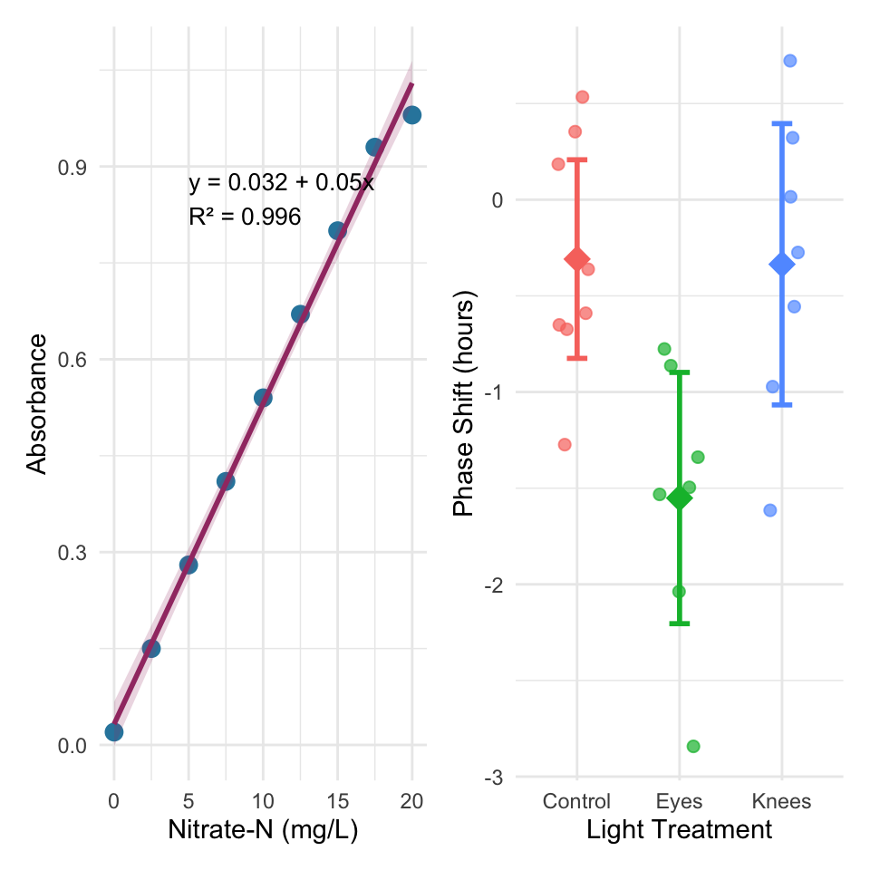
Lecture 11 - Single factor analysis of variance - ANOVA
Lecture 11: Review
Multiple Regression
- MLR model
- Regression parameters
- Analysis of variance
- Null hypotheses
- Explained variance
- Assumptions and diagnostics
- Collinearity
- Interactions
- Dummy variables
- Model selection
- Importance of predictors

Lecture 12: Overview
ANOVA
Analysis of variance: single and to come multi-factor designs
- Predictor variables: fixed
- ANOVA model
- Analysis and partitioning of variance
- Null hypothesis
- Assumptions and diagnostics
- Post F Tests - Tukey and others
- Reporting the results
- Mixed Model Anova - random effects
What if response continuous and predictor(s) categorical?
| Independent variable | ||
|---|---|---|
| Dependent variable | Continuous | Categorical |
| Continuous | Regression | ANOVA |
| Categorical | Logistic regression |
Lecture 12: ANOVA and Regression Connection
Both regression and ANOVA:
- Partition the total variation in Y
- Use F-tests for significance where one MS is divided by another
Regression
- Form: \(Y = \beta_0 + \beta_1X + \varepsilon\)
- \(Y\) = outcome/response variable
- \(\beta_0\) = intercept (value of Y when X = 0)
- \(\beta_1\) = slope (change in Y per unit increase in X)
- \(X\) = predictor/independent variable
- \(\varepsilon\) = error term
- Test: \(H_0: \beta_1 = 0\)
- Tests whether slope equals zero
- Rejecting means X significantly predicts Y
ANOVA
- Form: \(Y_{ij} = \mu + A_i + \varepsilon_{ij}\)
- \(Y_{ij}\) = observation for person j in group i
- \(\mu\) = grand mean across all groups
- \(A_i\) = effect of group i
- \(\varepsilon_{ij}\) = error term
- Test: \(H_0: \mu_1 = \mu_2 = ... = \mu_k\)
- Tests whether all group means are equal
- Rejecting means at least one group differs
Lecture 12: ANOVA Partitioning
General method for partitioning variation in continuous dependent variable
- One or more continuous (and categorical) predictors:
- regression
- One or more categorical predictors:
- ANOVA
- Categorical predictor variables:
- groups or experimental treatments
Lecture 12: ANOVA as Regression
TipANOVA as Regression
With one categorical variable, ANOVA is equivalent to regression with dummy variables.
In fact when we will run ANOVAs we will use he same code as for regression!
regression: model <- lm(response ~ predictor, data = df)
anova: model <- lm(response ~ factor, data = df)
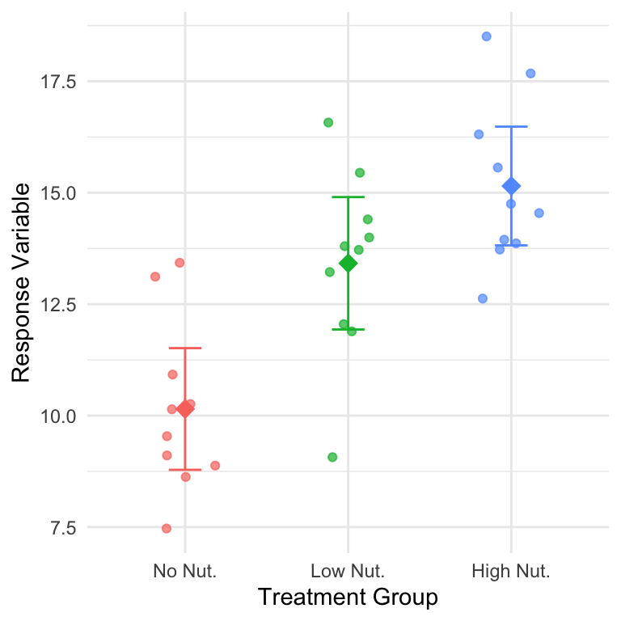
Lecture 12: ANOVA Goals
ANOVA aims to compare means of groups:
- Contribution of predictors + “error” to variability
- Test H₀ that population (random effects) or group (fixed effects) means are equal
- Single factor (1-way) and multifactor (2-, 3-way designs)
- Single factor: one factor with more than two levels
- Multifactor:
- two or three factors with two or more levels each
- Examines variation due to factors AND their interaction
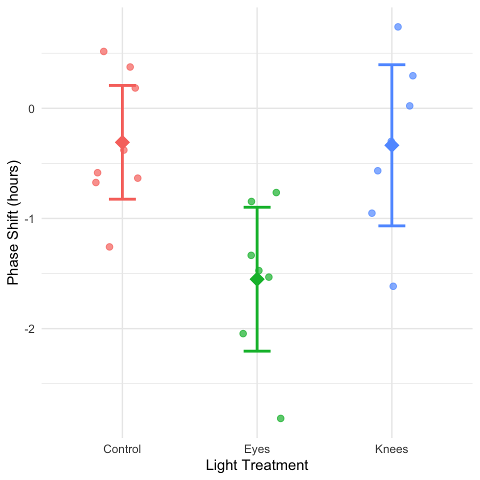
Lecture 12: Analysis of Variance
Analysis of variance - the most powerful approach known for simultaneously testing if the means of k groups are equal - works by assessing whether individuals chosen from different groups are, on average, more different than individuals chosen from the same group.
The null hypothesis of ANOVA is that the population means μᵢ are the same for all treatments.
- H₀: μ₁ = μ₂ = … = μₖ
- H₁: At least one μᵢ is different from the others.
Rejecting H₀ in ANOVA
- evidence that the mean of at least one group is different from the others
- does not indicate which means differ
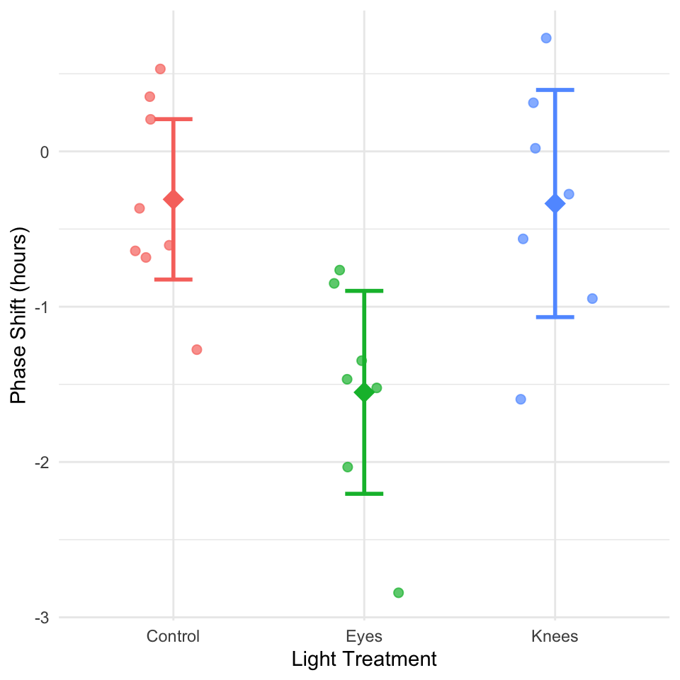
Lecture 12: ANOVA Logic
Even if all groups had the same true mean, the data would likely show different sample means for each group due to sampling error.
The key insight of ANOVA is that we can estimate how much variation among group means ought to be present from sampling error alone if the null hypothesis is true.
ANOVA lets us determine whether there is more variance among the sample means than we would expect by chance alone. If so, then we can infer that there are real differences among the population means.
Two key measures of variation are calculated and compared:
- Group mean square (MSgroups) - variation among subjects from different groups
- Error mean square (MSerror) - variation among subjects within the same group
The comparison is done with an F-ratio:
\[F = \frac{MS_{groups}}{MS_{error}}\]

Lecture 12: Partitioning the Sum of Squares
The total variation in Y can be expressed as a sum of squares:
\(SS_{total} = \sum_{i=1}^{a}\sum_{j=1}^{n}(Y_{ij} - \bar{Y})^2\)
This can be partitioned into two components:
Among Groups (Treatment): \(SS_{among} = \sum_{i=1}^{a}\sum_{j=1}^{n}(\bar{Y}_i - \bar{Y})^2 = n\sum_{i=1}^{a}(\bar{Y}_i - \bar{Y})^2\)
Within Groups (Error): \(SS_{within} = \sum_{i=1}^{a}\sum_{j=1}^{n}(Y_{ij} - \bar{Y}_i)^2\)
These components are additive: \(SS_{total} = SS_{among} + SS_{within}\)
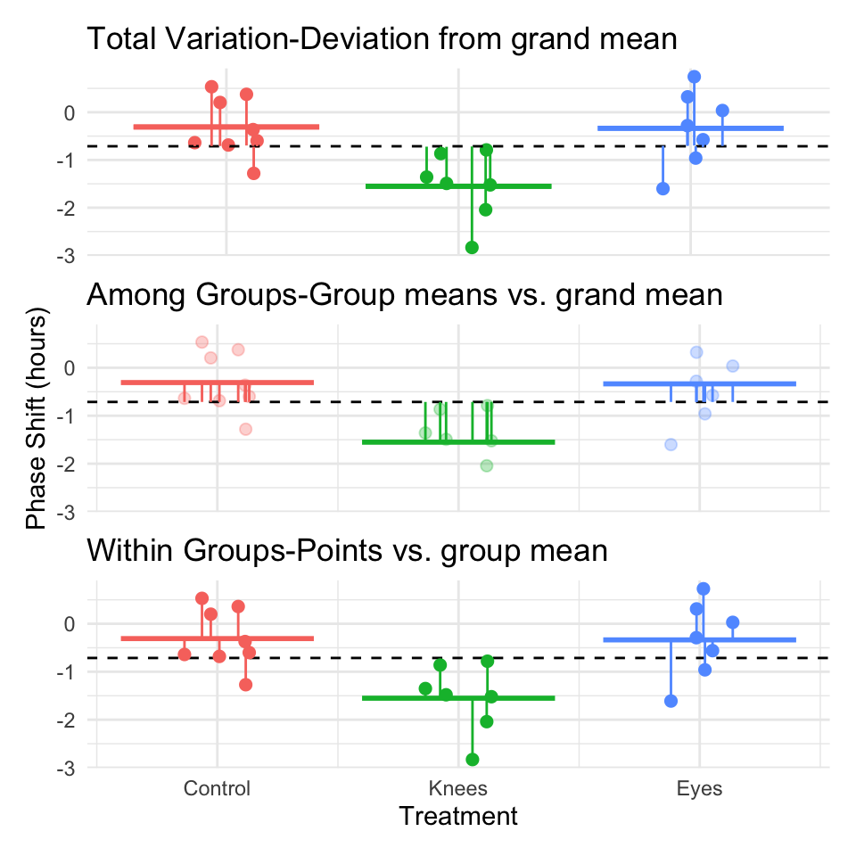
Lecture 12: Sum of Squares Example
Call:
lm(formula = phase_shift ~ treatment, data = circ_data)
Residuals:
Min 1Q Median 3Q Max
-1.27857 -0.36125 0.03857 0.61147 1.06571
Coefficients:
Estimate Std. Error t value Pr(>|t|)
(Intercept) -0.30875 0.24888 -1.241 0.22988
treatmentEyes -1.24268 0.36433 -3.411 0.00293 **
treatmentKnees -0.02696 0.36433 -0.074 0.94178
---
Signif. codes: 0 '***' 0.001 '**' 0.01 '*' 0.05 '.' 0.1 ' ' 1
Residual standard error: 0.7039 on 19 degrees of freedom
Multiple R-squared: 0.4342, Adjusted R-squared: 0.3746
F-statistic: 7.289 on 2 and 19 DF, p-value: 0.004472Analysis of Variance Table
Response: phase_shift
Df Sum Sq Mean Sq F value Pr(>F)
treatment 2 7.2245 3.6122 7.2894 0.004472 **
Residuals 19 9.4153 0.4955
---
Signif. codes: 0 '***' 0.001 '**' 0.01 '*' 0.05 '.' 0.1 ' ' 1
ImportantKey Connection to Regression
This is the same partitioning we saw in regression analysis:
- \(SS_{total} = SS_{regression} + SS_{residual}\)
Where:
- \(SS_{among}\) in ANOVA = \(SS_{regression}\) in regression
- \(SS_{within}\) in ANOVA = \(SS_{residual}\) in regression
Both measure how much variation is explained by our model vs. unexplained (error).
Lecture 12: ANOVA Tables
The ANOVA table organizes all computations leading to a test of the null hypothesis of no differences among population means.
- Source of variation: What is being tested
- Sum of squares: Measure of total variation for each source
- df: Degrees of freedom for each source
- Mean squares: Sum of squares divided by df
- F-ratio: Ratio of mean squares, used to test significance
- P-value: Probability of observing our results if H₀ is true
Example: For a one-way ANOVA with 3 groups and 4 replicates per group:
- df for treatments = (a - 1) = 2
- df for error = a(n - 1) = 3(4 - 1) = 9
- df total = an - 1 = 11
Call:
lm(formula = phase_shift ~ treatment, data = circ_data)
Residuals:
Min 1Q Median 3Q Max
-1.27857 -0.36125 0.03857 0.61147 1.06571
Coefficients:
Estimate Std. Error t value Pr(>|t|)
(Intercept) -0.30875 0.24888 -1.241 0.22988
treatmentEyes -1.24268 0.36433 -3.411 0.00293 **
treatmentKnees -0.02696 0.36433 -0.074 0.94178
---
Signif. codes: 0 '***' 0.001 '**' 0.01 '*' 0.05 '.' 0.1 ' ' 1
Residual standard error: 0.7039 on 19 degrees of freedom
Multiple R-squared: 0.4342, Adjusted R-squared: 0.3746
F-statistic: 7.289 on 2 and 19 DF, p-value: 0.004472Analysis of Variance Table
Response: phase_shift
Df Sum Sq Mean Sq F value Pr(>F)
treatment 2 7.2245 3.6122 7.2894 0.004472 **
Residuals 19 9.4153 0.4955
---
Signif. codes: 0 '***' 0.001 '**' 0.01 '*' 0.05 '.' 0.1 ' ' 1# A tibble: 3 × 4
treatment Mean SD N
<fct> <dbl> <dbl> <int>
1 Control -0.309 0.618 8
2 Eyes -1.55 0.706 7
3 Knees -0.336 0.791 7Lecture 12: ANOVA vs Regression Tables
ImportantComparing ANOVA and Regression Tables
An ANOVA table compared to a regression table:
| Source | df | SS | MS | F | p |
|---|---|---|---|---|---|
| Treatment | a-1 | SS_treatment | MS_treatment | F | p |
| Error | a(n-1) | SS_error | MS_error | ||
| Total | a*n-1 | SS_total |
Is equivalent to an ANOVA table from a regression model:
| Source | df | SS | MS | F | p |
|---|---|---|---|---|---|
| Regression | k | SS_regression | MS_regression | F | p |
| Error | n-k-1 | SS_residual | MS_residual | ||
| Total | n-1 | SS_total |
- k = number of predictor / dummy variables = a-1
- a = treatment groups/levels of factors
Lecture 12: F ratio
The F-ratio is calculated as: \(F = \frac{MS_{among}}{MS_{error}}\)
- Under the null hypothesis (all means equal):
- The F-ratio should be approximately 1
- Larger F-ratios suggest among-group variance exceeds that expected by chance
- The F-ratio should be approximately 1
- With the circadian rhythm data:
- F = 7.29 - p = 0.004
- We reject the null hypothesis
- F-ratio follows F-distribution with (a - 1) and (a(n - 1)) df
- F = 7.29 - p = 0.004
# A tibble: 2 × 2
Metric Value
<chr> <dbl>
1 F-observed 7.29
2 F-critical (α = 0.05) 3.52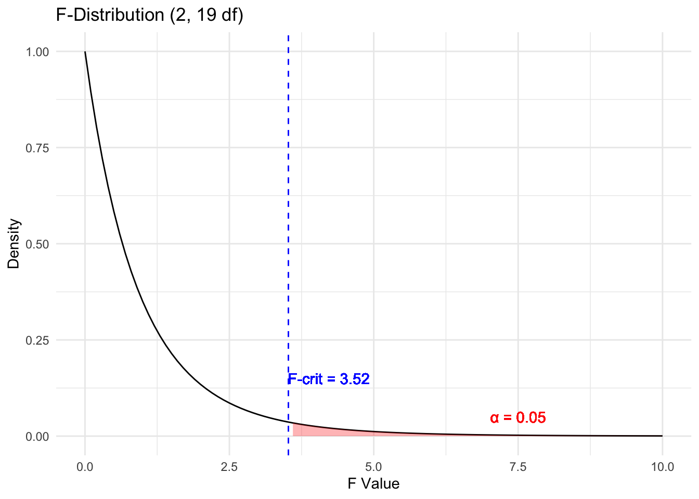
Connection of a F test to T Test
An ANOVA with two groups (a = 2) is equivalent to a t-test:
- Why \(F=t^2\)
- testing the same hypothesis: are means of two groups different?
- Understanding the t-statistic
The t-statistic for comparing two independent groups is: \(t = \frac{\bar{X}_1 - \bar{X}_2}{SE_{\text{difference}}}\)
Measuring # standard errors apart the two means are and can be + / -
- Understanding the F-statistic
F-statistic in ANOVA is: \(F = \frac{\text{Mean Square Between Groups}}{\text{Mean Square Within Groups}} = \frac{MS_B}{MS_W}\)
ratio of variance between groups to variance within groups
Unlike \(t\), \(F\) is always non-negative (it’s a ratio of squared quantities).
- The Mathematical Connection (squaring remove sign) of t2
- Both measure same signal-to-noise ratio:
numerators capture difference between groups (signal)
denominator captures variability within groups (noise)
- Both measure same signal-to-noise ratio:
- When you have two groups:
\(MS_B\) is directly related to \((\bar{X}_1 - \bar{X}_2)^2\)
\(MS_W\) is related to the pooled variance
- Degrees of Freedom also match up:
t-test: \(df = n_1 + n_2 - 2\)
F-test (two groups): \(df_1 = 1\) (numerator), \(df_2 = n_1 + n_2 - 2\) (denominator)
F-distribution with \(df_1 = 1\) is the square of a t-distribution with \(df_2\)
Connection of a F test to T Test
Why This Matters
Shows ANOVA is actually a generalization of the t-test
When \(a = 2\), you get the same result either way
but ANOVA extends naturally to comparing three or more groups,
can’t do that directly with a t-test (without running into multiple comparison problems).
Numerical Example
Let’s verify this relationship with a simple example in R:
Using circ_data (Control vs Knees groups):
t-statistic: 0.0741
t^2: 0.0055
F-statistic: 0.0055
Difference (should be ~0): 0 Lecture 12: F ratio Visualization
The F-ratio is calculated as: \(F = \frac{MS_{among}}{MS_{error}}\) - Under the null hypothesis (all means equal): - F-ratio should be approximately 1 - Larger F-ratios suggests among-group variance exceeds chance - With the circadian rhythm data: F2,19 = 7.29, p = 0.004
- We reject the null hypothesis
- F-ratio follows an F-distribution with (a - 1) and (a(n - 1)) df
Call:
lm(formula = phase_shift ~ treatment, data = circ_data)
Residuals:
Min 1Q Median 3Q Max
-1.27857 -0.36125 0.03857 0.61147 1.06571
Coefficients:
Estimate Std. Error t value Pr(>|t|)
(Intercept) -0.30875 0.24888 -1.241 0.22988
treatmentEyes -1.24268 0.36433 -3.411 0.00293 **
treatmentKnees -0.02696 0.36433 -0.074 0.94178
---
Signif. codes: 0 '***' 0.001 '**' 0.01 '*' 0.05 '.' 0.1 ' ' 1
Residual standard error: 0.7039 on 19 degrees of freedom
Multiple R-squared: 0.4342, Adjusted R-squared: 0.3746
F-statistic: 7.289 on 2 and 19 DF, p-value: 0.004472Anova Table (Type II tests)
Response: phase_shift
Sum Sq Df F value Pr(>F)
treatment 7.2245 2 7.2894 0.004472 **
Residuals 9.4153 19
---
Signif. codes: 0 '***' 0.001 '**' 0.01 '*' 0.05 '.' 0.1 ' ' 1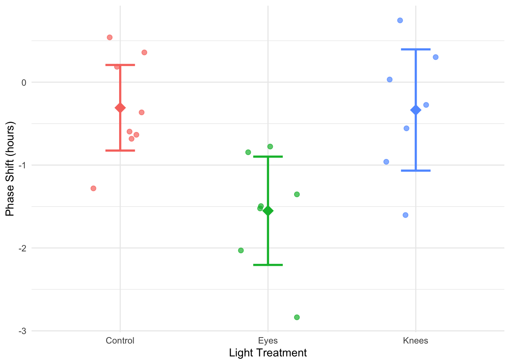
Lecture 12: Variation Explained: R2
R² summarizes the contribution of group differences to total variation:
\[R^2 = \frac{SS_{among}}{SS_{total}}\]
This is interpreted as the “fraction of the variation in Y that is explained by groups.”
For the circadian rhythm data: \[R^2 = \frac{7.224}{16.639} = 0.43\]
43% of the total variation in phase shift is explained by differences in light treatment, with the remaining 57% being unexplained variation.
Connection to Regression
This is exactly the same calculation as R² in regression: \[R^2 = \frac{SS_{regression}}{SS_{total}}\]
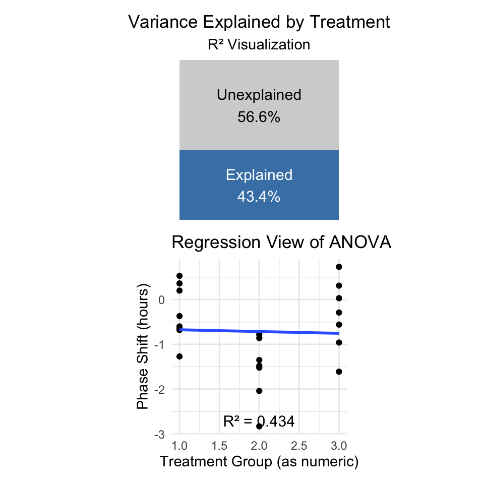
Lecture 12: ANOVA Assumptions
- ANOVA has the same assumptions as the two-sample t-test, but applied to all k groups:
- Random samples from corresponding populations
- Normality: Y values are normally distributed in each population
- Homogeneity of variance: variance is the same in all populations
- Independence: observations are independent
- Checking assumptions:
- Normality: Q-Q plots, histogram of residuals, Shapiro-Wilk test
- Homogeneity: plot residuals vs. predicted values or x-values
- Independence: examine experimental design
- If assumptions are violated:
Transform Y (e.g., log, square root)
Use robust or non-parametric alternatives
Use generalized linear models (GLMs)
Lecture 12: ANOVA diagnostics
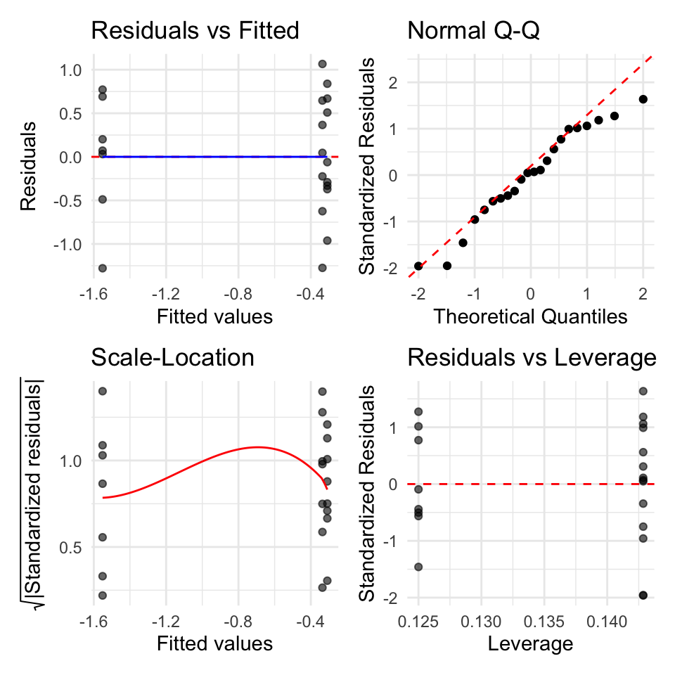
print((p1 | p2) / (p3 | p4))
A newer way to check with the performance library
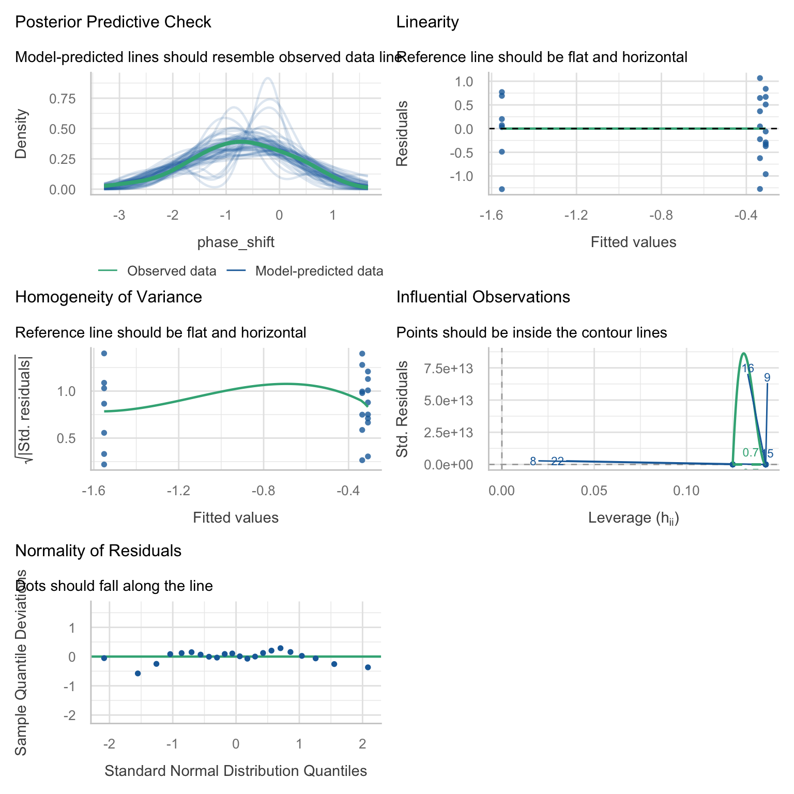
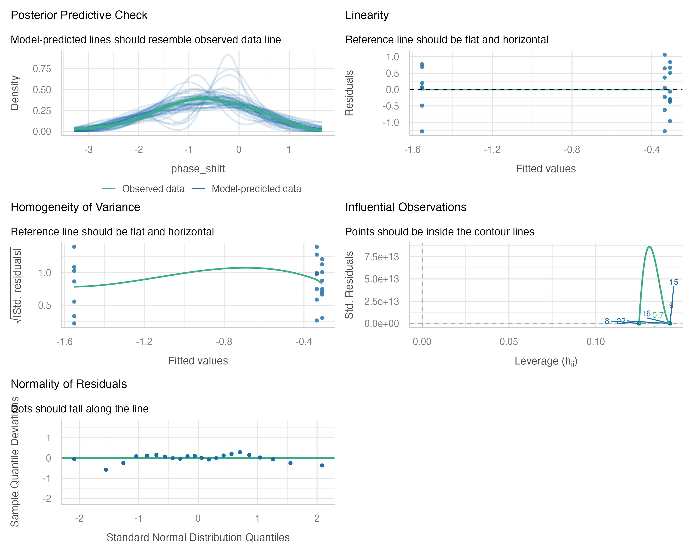
Lecture 12: Levene’s Test
Levene’s test of homogeneity of variance
- Null Hypothesis is that they are homogeneous
- So you want a non significant result here
Levene's Test for Homogeneity of Variance (center = median)
Df F value Pr(>F)
group 2 0.1586 0.8545
19 Lecture 12: Shapiro-Wilk Test
Shapiro-Wilk Normality Test Null Hypothesis is that they are normally distributed So you want a non significant result here
Shapiro-Wilk normality test
data: residuals(circ_model)
W = 0.95893, p-value = 0.468
NoteShared Assumptions with Regression
ANOVA and regression share virtually identical assumptions because they are both linear models:
| Assumption | ANOVA | Regression |
|---|---|---|
| Linearity | Each group has its own mean; effects are additive (no interaction in one-way ANOVA) | Relationship between X and Y is linear |
| Normality | Residuals are normal | Residuals are normal |
| Equal variance | Variance is the same across all groups | Variance is the same across all X values |
| Independence | Observations are independent | Observations are independent |
Lecture 12: ANOVA Post-Hoc Testing Overview
When ANOVA rejects H₀, we need to determine which groups differ
- Unplanned (post hoc) comparisons:
- Used when no specific comparisons were planned
- Must adjust for multiple testing
- Common methods: Tukey-Kramer, Bonferroni, Scheffé, Sidak
- Planned (post hoc) comparisons:
- Have strong prior justification
- Use pooled variance from all groups
- Have higher precision than separate t-tests
- Example: Using Tukey’s HSD to compare all pairs of treatments in the circadian rhythm data.
contrast estimate SE df t.ratio p.value
Control - Eyes 1.243 0.364 19 3.411 0.0079
Control - Knees 0.027 0.364 19 0.074 0.9970
Eyes - Knees -1.216 0.376 19 -3.231 0.0117
P value adjustment: tukey method for comparing a family of 3 estimates treatment emmean SE df lower.CL upper.CL .group
Eyes -1.551 0.266 19 -2.25 -0.855 a
Knees -0.336 0.266 19 -1.03 0.361 b
Control -0.309 0.249 19 -0.96 0.343 b
Confidence level used: 0.95
Conf-level adjustment: sidak method for 3 estimates
P value adjustment: tukey method for comparing a family of 3 estimates
significance level used: alpha = 0.05
NOTE: If two or more means share the same grouping symbol,
then we cannot show them to be different.
But we also did not show them to be the same. Lecture 12: Post-Hoc Testing Results
When ANOVA rejects H₀, we need to determine which groups differ
- Unplanned (post hoc) comparisons:
- Used when no specific comparisons were planned
- Must adjust for multiple testing
- Common methods: Tukey-Kramer, Bonferroni, Scheffé
- Planned (post hoc) comparisons:
- Have strong prior justification
- Use pooled variance from all groups
- Have higher precision than separate t-tests
- Example: Using Tukey’s HSD to compare all pairs of treatments in the circadian rhythm data.
[1] "Control" "Eyes" "Knees" contrast estimate SE df t.ratio p.value
control vs eyes 1.243 0.364 19 3.411 0.0029
control vs knees 0.027 0.364 19 0.074 0.9418Comparison of Post-Hoc Tests
The Main Post-Hoc Tests
- Tukey-Kramer (HSD - Honestly Significant Difference)
- Compares all possible pairs of group means
- Controls family-wise error rate when making multiple comparisons
- Most powerful when you want to compare ALL pairwise combinations
- Bonferroni
- Adjusts α level by dividing by the number of comparisons (e.g., α/k)
- Very conservative - reduces power to detect real differences
- Best choice for: small number of planned comparisons (not exploratory analyses of all pairs)
- Sidak
- Similar to Bonferroni but slightly less conservative
- Uses multiplicative adjustment: 1-(1-α)^(1/k)
- Best choice for: similar situations to Bonferroni, gives slightly more power
- Dunnett’s Test
- Specifically for comparing treatment groups to control
- More powerful than other tests
The key tradeoff is between power (ability to detect real differences) and Type I error control (avoiding false positives). More conservative tests = better error control but less power.
# ============================================
# TUKEY-KRAMER (HSD)
# ============================================
# All pairwise comparisons
tukey_result <- emmeans(circ_model, "treatment") |>
pairs(adjust = "tukey")
# tukey_result
# # With compact letter display
# tukey_cld <- emmeans(circ_model, "treatment") |>
# multcomp::cld(Letters = letters, adjust = "tukey")
# # tukey_cld
# ============================================
# BONFERRONI
# ============================================
# All pairwise comparisons with Bonferroni adjustment
bonferroni_result <- emmeans(circ_model, "treatment") |>
pairs(adjust = "bonferroni")
# bonferroni_result
# # With compact letter display
# bonferroni_cld <- emmeans(circ_model, "treatment") |>
# multcomp::cld(Letters = letters, adjust = "bonferroni")
# # bonferroni_cld
# ============================================
# ŠIDÁK (SIDAK)
# ============================================
# All pairwise comparisons with Šidák adjustment
sidak_result <- emmeans(circ_model, "treatment") |>
pairs(adjust = "sidak")
# sidak_result
# # With compact letter display
# sidak_cld <- emmeans(circ_model, "treatment") |>
# multcomp::cld(Letters = letters, adjust = "sidak")
# # sidak_cld
# ============================================
# DUNNETT'S TEST
# ============================================
# Compare all treatments to control
# Need to specify control group as reference
dunnett_result <- emmeans(circ_model, "treatment") |>
contrast(method = "trt.vs.ctrl", ref = 1, adjust = "dunnett")
# dunnett_result
# ============================================
# COMPARISON TABLE
# ============================================
# Create a comparison tibble showing p-values from different methods
# First, get the actual comparison names from your results
comparison_summary <- tibble(
Comparison = summary(tukey_result)$contrast,
Tukey = summary(tukey_result)$p.value,
Bonferroni = summary(bonferroni_result)$p.value,
Sidak = summary(sidak_result)$p.value
)
# ============================================
# SUMMARY TABLE WITH ALL RESULTS
# ============================================
# Create a comprehensive comparison
all_methods <- bind_rows(
summary(tukey_result) |>
as_tibble() |>
select(contrast, estimate, SE, p.value) |>
mutate(Method = "Tukey"),
summary(bonferroni_result) |>
as_tibble() |>
select(contrast, estimate, SE, p.value) |>
mutate(Method = "Bonferroni"),
summary(sidak_result) |>
as_tibble() |>
select(contrast, estimate, SE, p.value) |>
mutate(Method = "Sidak")
)
# Pivot wider for easy comparison
all_methods |>
select(contrast, Method, p.value) |>
pivot_wider(names_from = Method, values_from = p.value) |>
arrange(Tukey)# A tibble: 3 × 4
contrast Tukey Bonferroni Sidak
<chr> <dbl> <dbl> <dbl>
1 Control - Eyes 0.00787 0.00879 0.00877
2 Eyes - Knees 0.0117 0.0132 0.0131
3 Control - Knees 0.997 1 1.000 Lecture 12: Post-Hoc Visualization
When ANOVA rejects H₀, we need to determine which groups differ.
- Unplanned (post hoc) comparisons:
- Used when no specific comparisons were planned
- Must adjust for multiple testing
- Common methods: Tukey-Kramer, Bonferroni, Scheffé
- Planned (post hoc) comparisons:
- Have strong prior justification
- Use pooled variance from all groups
- Have higher precision than separate t-tests
- Example: Using Tukey’s HSD to compare all pairs of treatments in the circadian rhythm data.

Lecture 12: Significance Groups Plot
When ANOVA rejects H₀, we need to determine which groups differ.
- Unplanned (post hoc) comparisons:
- Used when no specific comparisons were planned
- Must adjust for multiple testing
- Common methods: Tukey-Kramer, Bonferroni, Scheffé
- Planned (post hoc) comparisons:
- Have strong prior justification
- Use pooled variance from all groups
- Have higher precision than separate t-tests
- Example: Using Tukey’s HSD to compare all pairs of treatments in the circadian rhythm data.
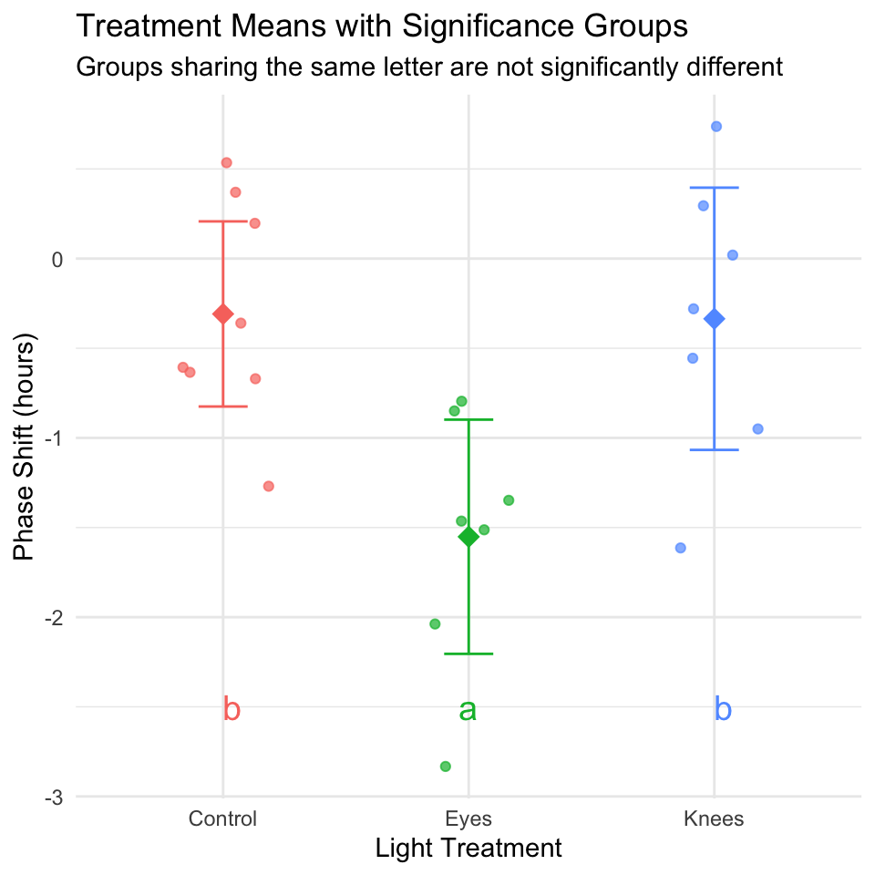
Lecture 12: Reporting ANOVA Results
Formal scientific writing example:
“The effect of light treatment on circadian rhythm phase shift was analyzed using a one-way ANOVA. There was a significant effect of treatment on phase shift (F(2, 19) = 7.29, p = 0.004, η² = 0.43). Post-hoc comparisons using Tukey’s HSD test indicated that the mean phase shift for the Eyes treatment (M = -1.55 h, SD = 0.71) was significantly different from both the Control treatment (M = -0.31 h, SD = 0.62) and the Knees treatment (M = -0.34 h, SD = 0.79). However, the Control and Knees treatments did not significantly differ from each other. These results suggest that light exposure to the eyes, but not to the knees, impacts circadian rhythm phase shifts.”
Lecture 12: ANOVA Summary
Key ANOVA Principles
- Purpose: ANOVA (Analysis of Variance) compares means across multiple groups simultaneously
- Connection to Regression:
- Both are special cases of the General Linear Model
- ANOVA with categorical predictors = Regression with dummy variables
- Both partition variance into explained and unexplained components
- The Analysis of Variance:
- Partitions total variation into components
- Tests whether differences among groups exceed what would be expected by chance
- Uses F-tests to compare variance between groups to variance within groups
- Sum of Squares Partitioning:
- SS(Total) = SS(Between Groups) + SS(Within Groups)
- Same as SS(Total) = SS(Regression) + SS(Error) in regression
- Fixed vs. Random Effects:
- Fixed effects: specific groups of interest (most common)
- Random effects: sampling from a larger population
Overview of Non-Parametric Tests
Common Non-Parametric Alternatives to ANOVA
Non-parametric tests make fewer assumptions about the data distribution
- Kruskal-Wallis Test
- Non-parametric alternative to one-way ANOVA
- Tests for differences in median ranks
- Works with ordinal or continuous data
- Assumptions: Independent observations, similar distribution shapes
- Mood’s Median Test not covered here
- Tests whether medians differ across groups
- More robust but less powerful than Kruskal-Wallis
- Good for highly skewed data
When to Use Non-Parametric Tests
Consider non-parametric tests when:
- Sample sizes are small
- Data are heavily skewed
- Outliers are present and legitimate
- Variances are very unequal
- Data are ordinal (ranked)
- Assumptions checks clearly fail
Trade-offs:
- ✗ Less statistical power
- ✗ Test medians/ranks, not means
Kruskal-Wallis Test: Overview
The Kruskal-Wallis H Test
- Most common non-parametric alternative to one-way ANOVA
- What it does:
- Ranks all observations from smallest to largest
- Compares the sum of ranks between groups
- Tests if groups come from the same distribution
- Hypotheses:
- H₀: All groups have the same distribution (same median)
- H₁: At least one group has a different distribution
- Test statistic (H): \(H = \frac{12}{N(N+1)} \sum_{i=1}^{k} n_i (\bar{R}_i - \bar{R})^2 - 3(N+1)\)
- Where:
- N = total sample size
- k = number of groups
- \(\bar{R}_i\) = mean rank for group i
- \(\bar{R}\)= overall mean rank = (N+1)/2
- nᵢ = sample size for group i
- constant 12 comes from the variance of ranks in a uniform distribution
- Distribution: Approximated by χ² with (k-1) degrees of freedom
- What it does:
Assumptions of Kruskal-Wallis
Much more relaxed than parametric ANOVA:
- Independence: Observations must be independent
- Same as parametric ANOVA
- Still critical!
- Similar distribution shapes: Groups should have similar distribution shapes (same spread/variance)
- If violated, interprets as differences in distributions generally
- Not just medians
- Ordinal or continuous data: Response variable should be at least ordinal
- What’s NOT assumed:
- ✗ Normal distribution
- ✗ Equal variances (though helps interpretation)
- ✗ Specific distribution shape
Demonstrating Assumption Violations
Creating Data That Violates Assumptions
Let’s create a modified dataset with clear violations:
# Create data with outliers and skewness
set.seed(42)
violated_circ_df <- circ_data %>%
mutate(
phase_shift_violated = case_when(
treatment == "Control" ~ phase_shift,
treatment == "Knees" ~ phase_shift * 3.25,
treatment == "Eyes" ~ {
n <- length(phase_shift)
c(phase_shift[1:(n-2)], phase_shift[(n-1):n] - 7)
}
)
)
# Fit model with violated assumptions
violated_model <- lm(phase_shift_violated ~ treatment,
data = violated_circ_df)What we changed:
- - Increased variance in Knees group
- - Added extreme outliers to Eyes group
- - Created unequal variances and non-normality
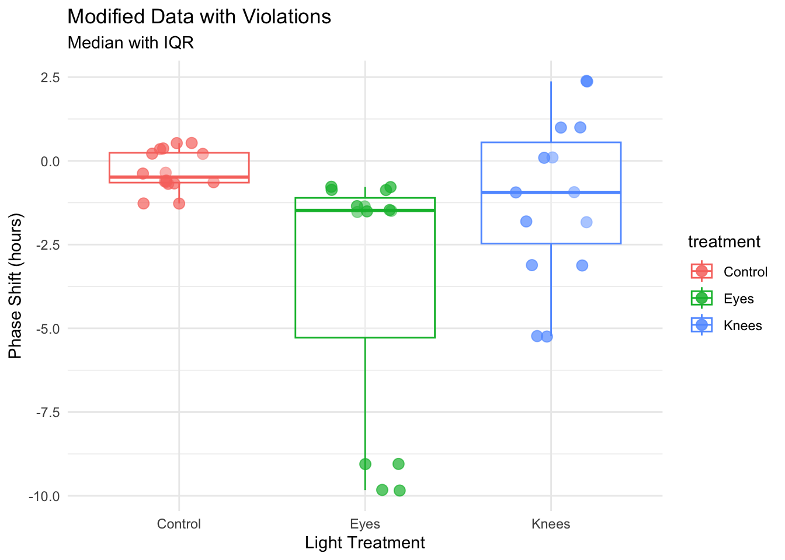
Checking Violated Data Assumptions
Normality Test on Violated Data
Clear violation: p < 0.05, points deviate from line
Shapiro-Wilk normality test
data: resid(violated_model)
W = 0.89473, p-value = 0.02335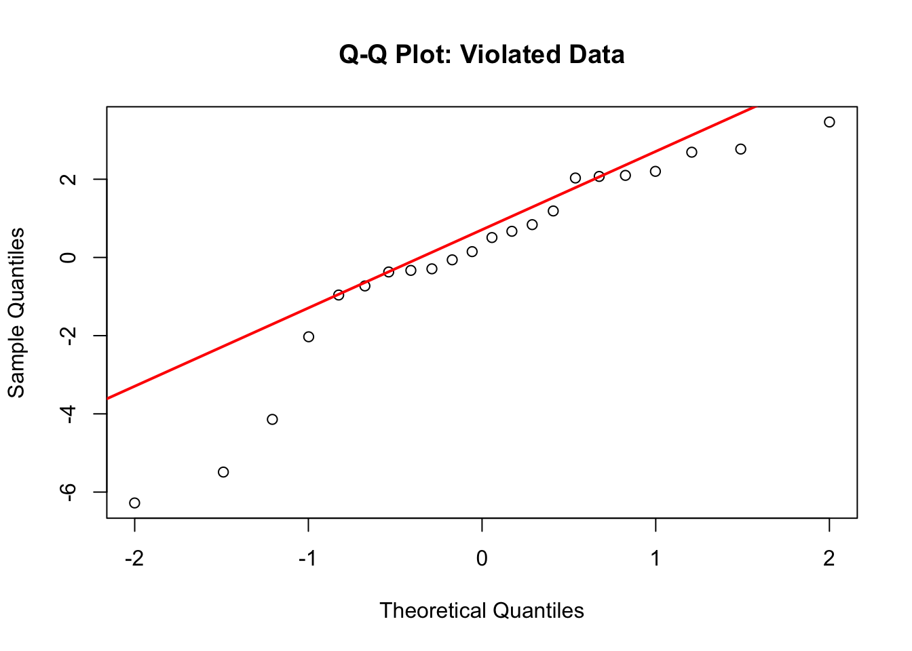
Variance Test on Violated Data
- ok having issues making it not homogeoeous
- Clear violation: p < 0.05, unequal variances evident
Levene's Test for Homogeneity of Variance (center = median)
Df F value Pr(>F)
group 2 1.5618 0.2355
19 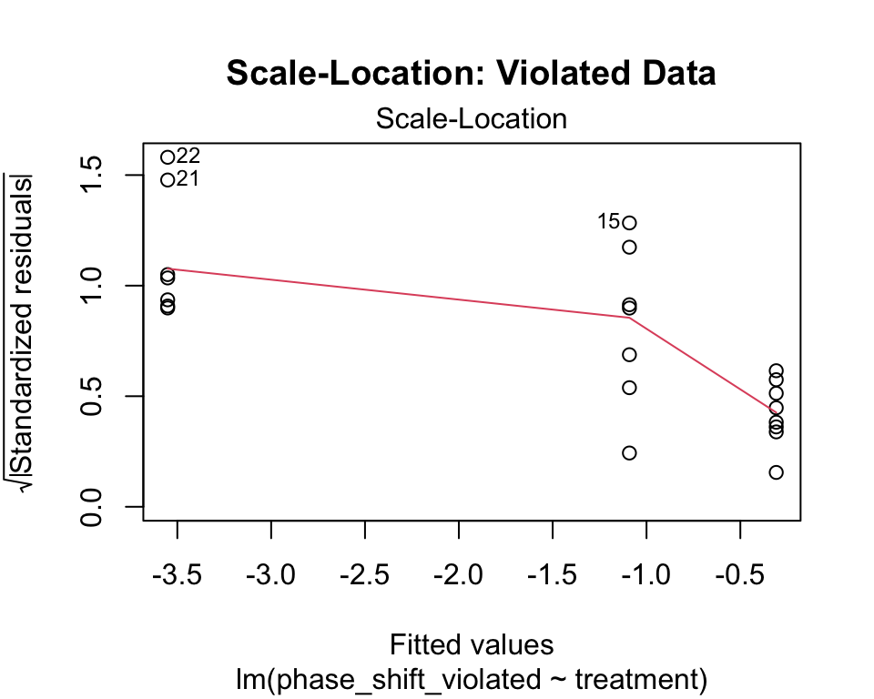
Performing the Kruskal-Wallis Test
Running Kruskal-Wallis on Original Data
Even though assumptions are met, let’s compare results:
# Kruskal-Wallis test on original data
kruskal_original_result <- kruskal.test(
phase_shift ~ treatment,
data = circ_data)
# Display results
kruskal_original_result
Kruskal-Wallis rank sum test
data: phase_shift by treatment
Kruskal-Wallis chi-squared = 9.4231, df = 2, p-value = 0.008991Interpretation: - H = test statistic (chi-squared approximation) - df = degrees of freedom (k - 1 = 3 - 1 = 2) - p-value = 0.0135 (significant at α = 0.05) - Conclusion: At least one group differs from others
Compare to parametric ANOVA:
Analysis of Variance Table
Response: phase_shift
Df Sum Sq Mean Sq F value Pr(>F)
treatment 2 7.2245 3.6122 7.2894 0.004472 **
Residuals 19 9.4153 0.4955
---
Signif. codes: 0 '***' 0.001 '**' 0.01 '*' 0.05 '.' 0.1 ' ' 1Rank Visualization
How Kruskal-Wallis works:
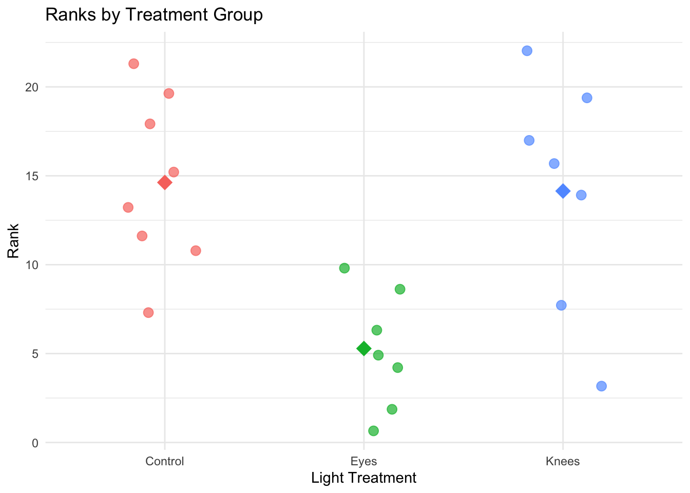
Rank Sums:
# A tibble: 3 × 4
treatment mean_rank sum_rank n
<fct> <dbl> <dbl> <int>
1 Control 14.6 117 8
2 Eyes 5.29 37 7
3 Knees 14.1 99 7Kruskal-Wallis on Violated Data
Non-Parametric Test Handles Violations
Running Kruskal-Wallis on data with assumption violations:
# Kruskal-Wallis test on violated data
kruskal_violated_result <- kruskal.test(
phase_shift_violated ~ treatment,
data = violated_circ_df)
kruskal_violated_result
Kruskal-Wallis rank sum test
data: phase_shift_violated by treatment
Kruskal-Wallis chi-squared = 6.8453, df = 2, p-value = 0.03263Analysis of Variance Table
Response: phase_shift_violated
Df Sum Sq Mean Sq F value Pr(>F)
treatment 2 41.806 20.9029 2.8361 0.0836 .
Residuals 19 140.037 7.3704
---
Signif. codes: 0 '***' 0.001 '**' 0.01 '*' 0.05 '.' 0.1 ' ' 1- Key observations:
- Both tests still detect differences
- Kruskal-Wallis more robust to violations
- Parametric test may give misleading results when assumptions violated
- Non-parametric test maintains validity
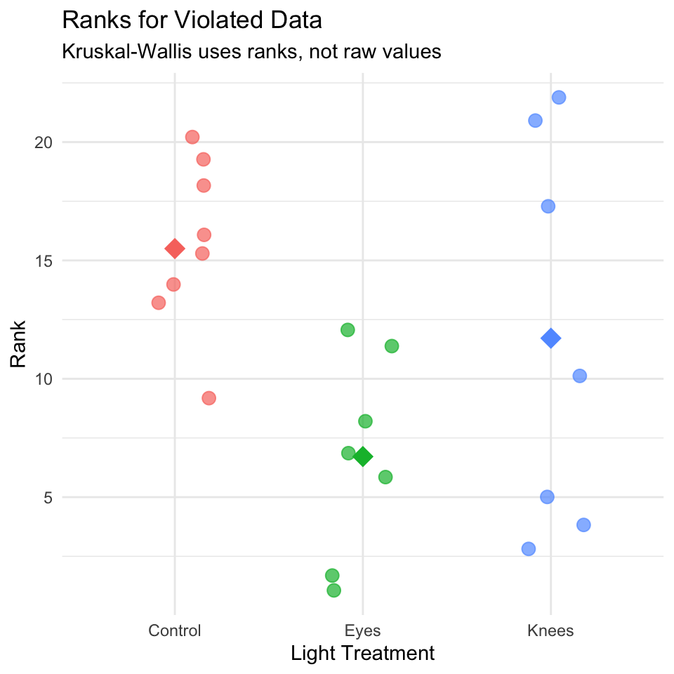
- Why Kruskal-Wallis is robust:
- - Uses ranks instead of raw values
- - Outliers affect ranks minimally
- - Unequal variances less problematic
- - No distribution assumptions needed
Post-Hoc Tests for Kruskal-Wallis
Pairwise Comparisons After Significant Kruskal-Wallis
Just like ANOVA, we need post-hoc tests to identify which groups differ:
Pairwise comparisons using Wilcoxon rank sum exact test
data: nonparam_circ_df$phase_shift and nonparam_circ_df$treatment
Control Eyes
Eyes 0.0037 -
Knees 1.0000 0.0787
P value adjustment method: bonferroni - Interpretation of p-values:
- - Control vs Eyes: p = 0.024 (significant)
- - Control vs Knees: p = 1.000 (not significant)
- - Eyes vs Knees: p = 0.078 (not significant)
- Common adjustment methods:
- -
"bonferroni": Most conservative - -
"holm": Less conservative than Bonferroni - -
"BH": Benjamini-Hochberg (controls false discovery rate) - -
"none": No adjustment (not recommended)
- -
Post-Hoc for Violated Data
# Post-hoc tests on violated data
pairwise_violated_result <- pairwise.wilcox.test(
x = violated_circ_df$phase_shift_violated,
g = violated_circ_df$treatment,
p.adjust.method = "bonferroni"
)
pairwise_violated_result
Pairwise comparisons using Wilcoxon rank sum exact test
data: violated_circ_df$phase_shift_violated and violated_circ_df$treatment
Control Eyes
Eyes 0.0037 -
Knees 1.0000 1.0000
P value adjustment method: bonferroni Comparison table:
Original Data Pairwise p-values:
Control vs Eyes: 0.024 *
Control vs Knees: 1.000
Eyes vs Knees: 0.078Violated Data Pairwise p-values:
Control vs Eyes: 0.015 *
Control vs Knees: 1.000
Eyes vs Knees: 0.015 *Dunn’s Test: Alternative Post-Hoc
Dunn’s Test for Multiple Comparisons
Dunn’s test is specifically designed for Kruskal-Wallis post-hoc comparisons:
# Dunn's test on original data
dunn_original_result <- dunnTest(
phase_shift ~ treatment,
data = circ_data,
method = "bonferroni")
dunn_original_result Comparison Z P.unadj P.adj
1 Control - Eyes 2.7789287 0.005453849 0.01636155
2 Control - Knees 0.1434629 0.885924641 1.00000000
3 Eyes - Knees -2.5517789 0.010717452 0.03215236- Advantages of Dunn’s test:
- Designed specifically for Kruskal-Wallis
- Provides Z-statistics in addition to p-values
- Multiple adjustment methods available
- More appropriate than multiple Wilcoxon tests
- Z-statistic is a standardized test statistic that tells you how many standard deviations an observation or difference is from the expected value (usually zero, meaning “no difference”).
Dunn’s Test on Violated Data
# Dunn's test on violated data
dunn_violated_result <- dunnTest(
phase_shift_violated ~ treatment,
data = violated_circ_df,
method = "bonferroni"
)
dunn_violated_result Comparison Z P.unadj P.adj
1 Control - Eyes 2.614212 0.008943349 0.02683005
2 Control - Knees 1.126449 0.259975463 0.77992639
3 Eyes - Knees -1.440520 0.149720243 0.44916073- Interpreting Z-statistics:
- Large |Z| values indicate bigger differences
- Z > 1.96 approximately equivalent to p < 0.05
- Sign indicates direction of difference
Reporting Non-Parametric Results
How to Report Kruskal-Wallis Results
Essential elements to include:
- Test name and purpose
- Sample sizes per group
- Medians and IQRs (not means and SDs!)
- Test statistic (H) and degrees of freedom, P-value, Effect size
- Post-hoc test results
- Conclusion
Example write-up: “A Kruskal-Wallis test was conducted to compare the effect of light treatment on circadian rhythm phase shift across three groups: Control (n = 8), Knees (n = 7), and Eyes (n = 7). Median phase shifts were -0.48 hours (IQR = 0.84) for Control, -0.29 hours (IQR = 1.04) for Knees, and -1.48 hours (IQR = 0.66) for Eyes. The test revealed a statistically significant difference in phase shift between the groups, H(2) = 8.66, p = 0.013, ε² = 0.37. Post-hoc pairwise comparisons using Dunn’s test with Bonferroni correction indicated that the Eyes treatment differed significantly from Control (p = 0.024), but no other pairwise differences were significant. These results suggest that light exposure to the eyes has a different effect on circadian rhythm than light to other body parts.”
APA Style Reporting
In-text citation format:
The Kruskal-Wallis test revealed significant differences between treatment groups, H(2) = 8.66, p = .013.
Table format:
Table 1. Descriptive Statistics for Phase Shift by Treatment
Note. IQR = interquartile range.
Kruskal-Wallis H(2) = 8.66, p = .013# A tibble: 3 × 6
treatment n Median IQR Min Max
<fct> <int> <dbl> <dbl> <dbl> <dbl>
1 Control 8 -0.485 0.89 -1.27 0.53
2 Eyes 7 -1.48 0.675 -2.83 -0.78
3 Knees 7 -0.29 0.93 -1.61 0.73Common mistakes to avoid:
- ✗ Reporting means instead of medians & Using SD instead of IQR
- ✗ Not mentioning it’s a non-parametric test
- ✗ Not justifying why non-parametric test used